Daylight and its variations
The same content in four looks. Each has a dark and a light theme.

Daylight
Just circle it.
Warm near-black or a warm white, with the app’s Sunset gradient. Three working sample apps on a stage that tilts in 3D: draw on them, then switch to Use apps and click through them.
- Dark and light, with a sun-to-moon switch and a circular reveal
- A pinned 3D deck of what you can do
- The toolbar starts customized, with a gradient selected
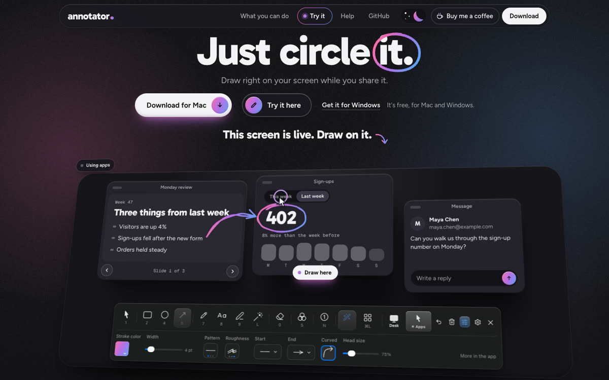
Daylight · Orchid
Soft, airy, springy.
Soft ink or milky white with out-of-focus orbs of the Orchid gradient. Windows float and lean toward your pointer; the tools are dealt from a fan.
- Pink to violet to blue accent
- A squashy switch and a soft blob theme change
- Gabarito and Figtree
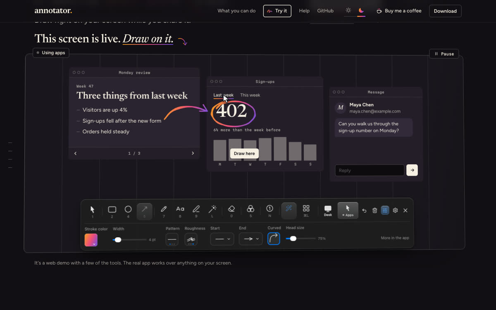
Daylight · Tropic
Editorial and type-led.
Aubergine-black or cream paper, a magazine grid and a serif with real italics, with the Tropic gradient. The tools turn like pages of a book.
- Orange to pink to violet accent
- Windows dealt onto the desk on load
- Theme change like window blinds
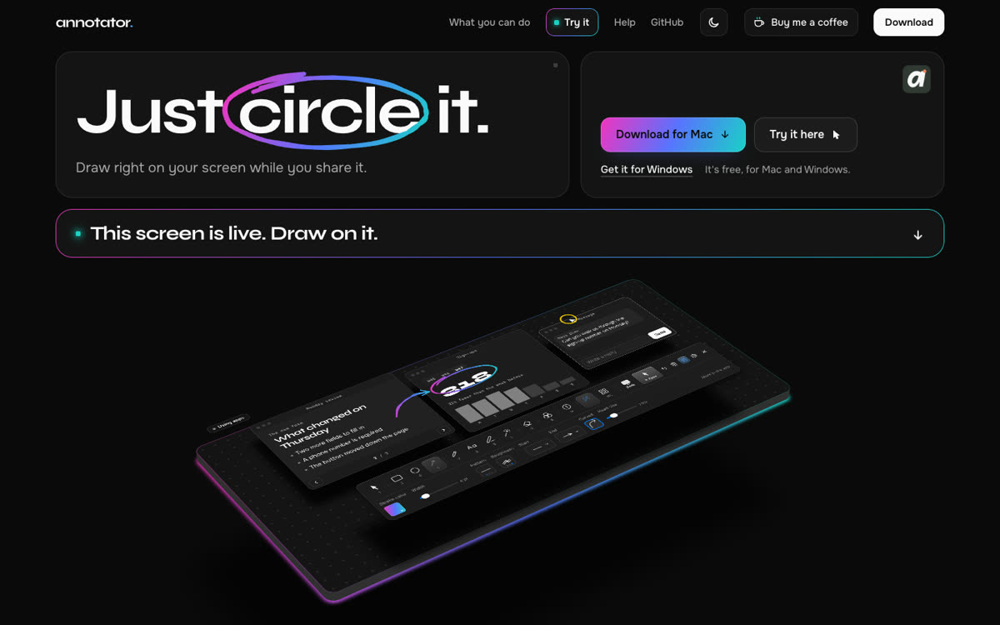
Daylight · Neon
Monochrome bento, electric accent.
Strict black or white, built from tiles on a grid, with thin edges of the Neon gradient. The hero straightens from an isometric tilt; tiles flip up and expand.
- Pink to blue to teal accent
- A flipping tile switch, pixel-block theme change
- Syne and Onest
Studio and its variations
The same content in four looks. Each has a dark and a light theme.
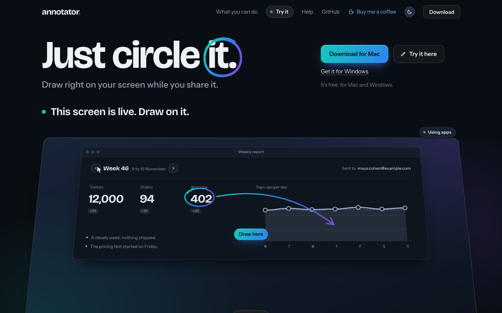
Studio
Just circle it.
Deep blue-black or a cool white, with the app’s Ocean gradient. A working weekly report on a screen that tilts in 3D: draw on it, then switch to Use apps and click through it.
- Dark and light, with a coin-flip switch and a diagonal wipe
- A 3D deck of what you can do
- The toolbar starts customized, with a gradient selected
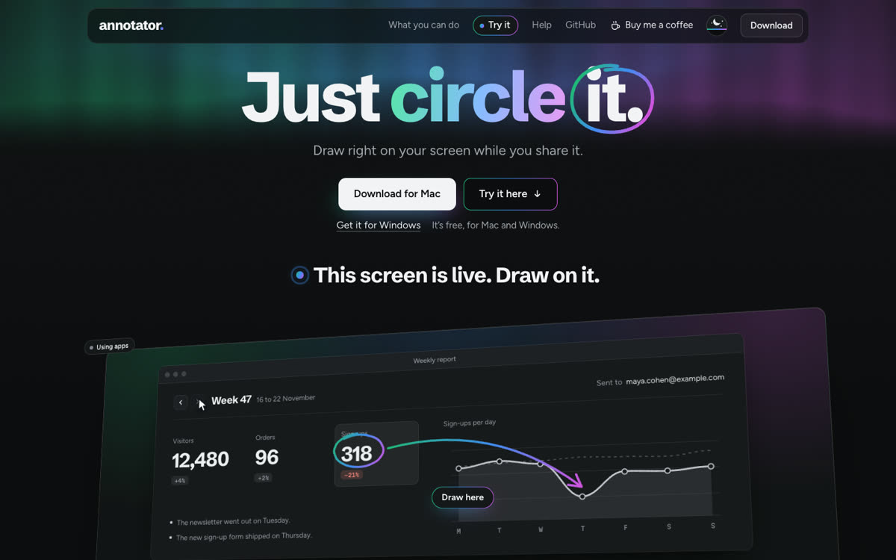
Studio · Aurora
Light in motion.
Graphite and soft grey-white, lit by slow fields of the Aurora gradient. The hero turns to face you; the tools sit on a 3D carousel.
- Green to blue to violet accent
- Horizon-dial theme switch, curtain of light
- Schibsted Grotesk and Figtree
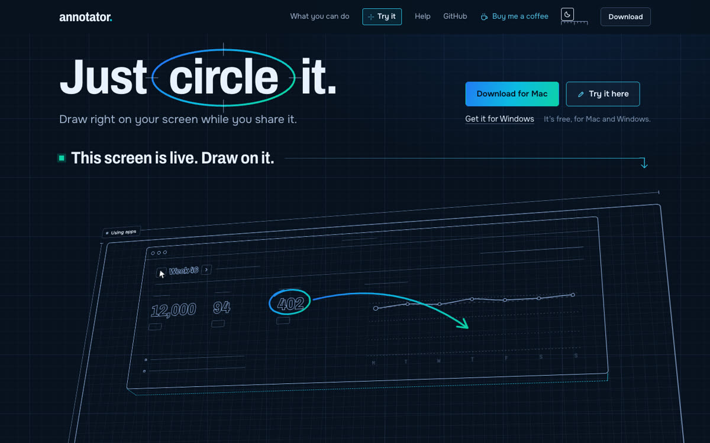
Studio · Blueprint
Drawn with precision.
Drafting navy or drafting paper, fine grids and line art in the Lagoon gradient. The hero resolves from a line drawing into the real screen.
- Lines draw themselves as you scroll
- Sheets that lift away like pages on a clipboard
- Theme change in a wave of flipping tiles
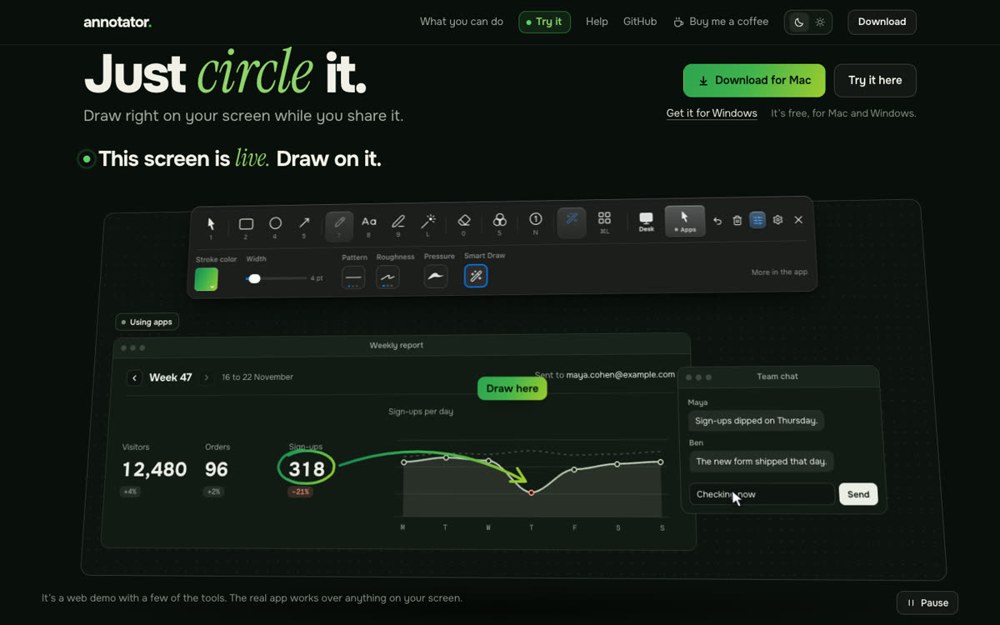
Studio · Forest
Moves like the app.
Deep green-black or a fresh off-white with the Forest gradient. The page's own motion is the app's: drawings fly in on the Magic swoop, headers grow from one button like the toolbar's Shrink.
- All-green accent
- Each section arrives in one of the app's show styles
- Theme change with the app's Dissolve
Earlier directions
Kept for comparison: two quiet takes and five louder ones.
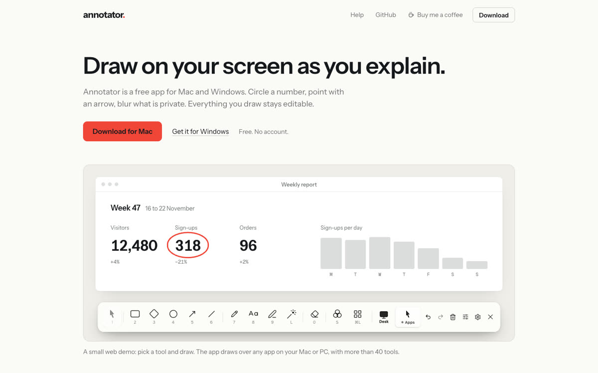
Plain
Draw on your screen as you explain.
One calm column, about 260 words. The real toolbar on a sample screen you can draw on, one recording, the facts, coffee, install.
- Follows your light or dark setting
- One accent color, one drawn ring
- No tasks, jokes or 3D
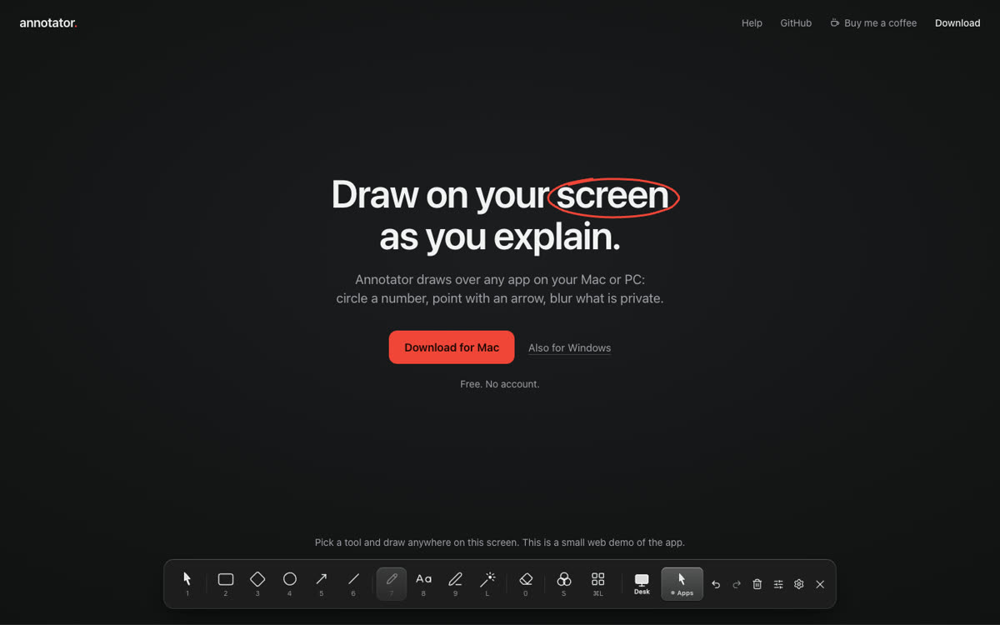
One screen
The first screen is the product.
A sentence, the download and the real toolbar. Draw anywhere on it. A short second part has the details.
- System font, feels like the app
- About 170 words in all
- Follows your light or dark setting
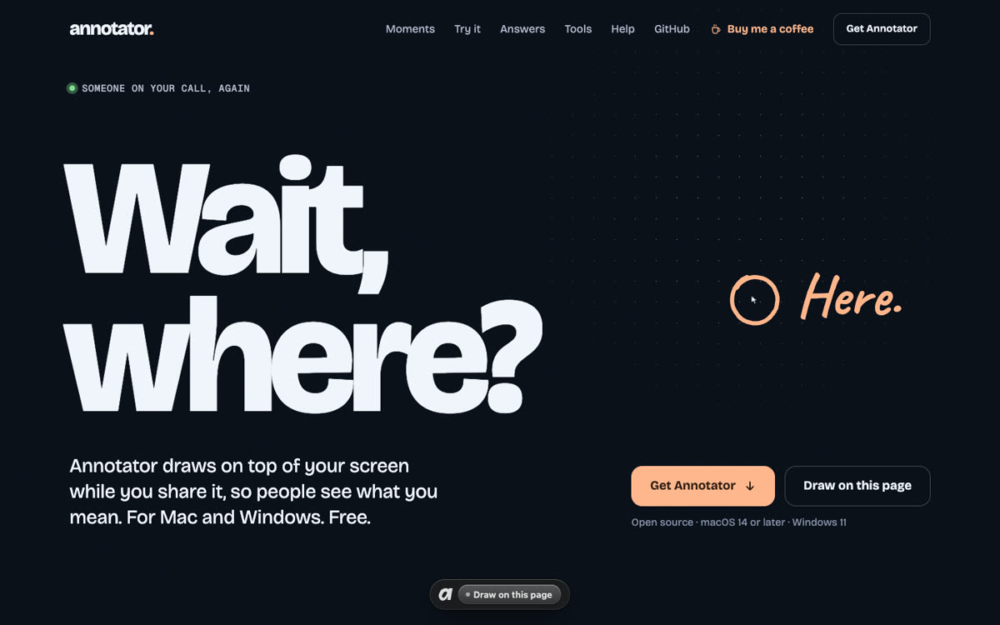
Live Ink
“Wait, where?” “Here.”
The page opens with your audience’s question and answers it with a ring. Every section after is a question, answered by a mark drawn live.
- You draw on the whole page
- Three sample screens, each with a small task
- The page’s own marks can be moved and bent
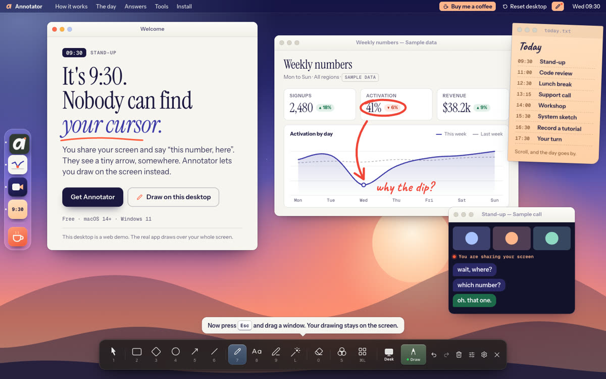
Desktop
A day with Annotator
A small desktop you can draw over. The clock runs from 9:30 stand-up to tomorrow morning and the sky changes with it.
- Windows you can drag while the ink stays put
- Each hour is one moment: review, break, workshop
- Coffee has its own window and a cup in the dock
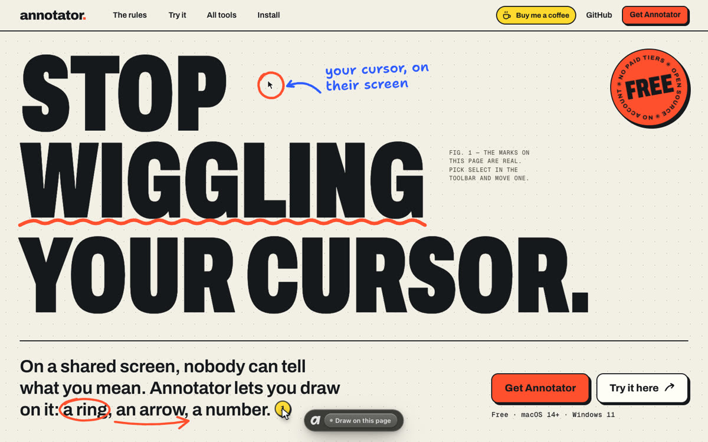
Marker
Stop wiggling your cursor
A field guide to pointing at things: six rules in giant type, performed on a sticky screen as you scroll.
- A Wiggle it / Draw it switch
- The fine print, in big print
- A second page lists every tool
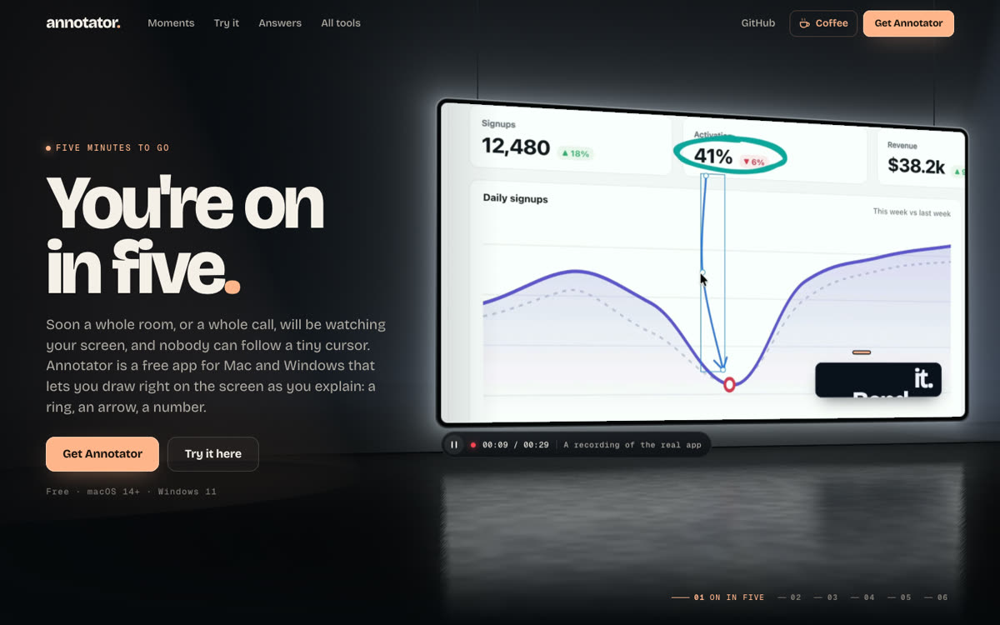
Stage
You’re on in five
A keynote room with the real recordings on a big screen. The tools happen in the room.
- The view from the back row
- Spotlight is a real cone of light, the laser a real beam
- Intermission: the break timer, and coffee
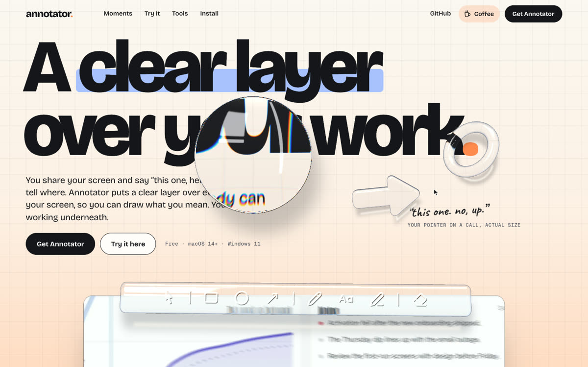
Glass
A clear layer over your work
Real refracting glass over the page: a lens that magnifies whatever is under your pointer, and a glass toolbar.
- Pull a sheet across a busy table: wiggle or ring
- “What never happens to your screen”
- A second page lists every tool